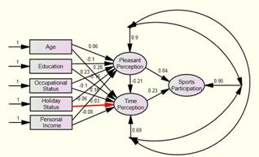

An Analysis of the Temporal Allotment of Sports Participation in Taiwan
Abstract
Sport is one of the most popular leisure activities of all time. The purposes of this study were to 1) deduce the basic modes of the average Taiwanese person’s sports participation; 2) probe into their schemas of temporal allotment, and 3) analyse the influential factors in their decision-making. It is hoped that this study can provide an internal variability model for observing the overall sports participation in Taiwan. The questionnaire subject pool included 5,102 Taiwanese retrieved from “The Survey of Social Development Trends (Time Use), Taiwan Area, ROC”, on five variables (age, education, occupation, holiday situation and personal income) and two intervening variables (pleasantness perception and time perception) from “The Cognition and Perception of Time” Scale. Descriptive statistics, categorical multiple regression analysis and path analysis were used to construct the sports participation internal model. The results are as follows: 1) the older the participants were in age, the more persistent their sports participation would appear to be. However, the higher their educational backgrounds were, the less enthusiastic they seemed to be about participating in sports. Workers and students had less sports participation, but the retired, the stay-at-home and the unemployed demonstrated real ardour for sports. Except for the group of unemployed as their holiday status and a personal income of less than 6,668 USD per year, the other factors had no significant influence on sports participation; 2) multiple regression with categorical variables: sport participation =.270 × age + .149 × occupation + .071 × holiday + .064 × education + .062 × time + .036 × income -.052 × pleasant; and 3) path analysis indicated that the model of sports participation was acceptable (χ2=463.45(p=.00), RMSEA=.134, GFI=.978, AGFI=.840, CFI=.973, NFI=.973, NNFI=.849, CN=159.411).
Authors
Po-Yang Hsu, Assistant Professor
Nan-Hua University
Chia-Yi, Taiwan
Yu-te Kuo, Associate Professor
Nan-Hua University
Chia-Yi, Taiwan
Chung-Chi Wu, Associate Professor
National Pingtung University of Science and Technology
Ping-Tung, Taiwan
Paper Transcript of Paper Titled :
An Analysis of the Temporal Allotment of Sports Participation in Taiwan
An Analysis of the Temporal Allotment of
Sports Participation in Taiwan
Po-Yang Hsu, Assistant Professor
Yu-te Kuo, Associate Professor
Nan-Hua University
Chia-Yi, Taiwan
Chung-ChiWu, Associate Professor
National Pingtung University of Science and Technology
Ping-Tung, Taiwan
Abstract— Sport is one of the most popular leisure activities of all time. The purposes of this study were to 1) deduce the basic modes of the average Taiwanese person’s sports participation; 2) probe into their schemas of temporal allotment, and 3) analyse the influential factors in their decision-making. It is hoped that this study can provide an internal variability model for observing the overall sports participation in Taiwan. The questionnaire subject pool included 5,102 Taiwanese retrieved from “The Survey of Social Development Trends (Time Use), Taiwan Area, ROC”, on five variables (age, education, occupation, holiday situation and personal income) and two intervening variables (pleasantness perception and time perception) from “The Cognition and Perception of Time” Scale. Descriptive statistics, categorical multiple regression analysis and path analysis were used to construct the sports participation internal model. The results are as follows: 1) the older the participants were in age, the more persistent their sports participation would appear to be. However, the higher their educational backgrounds were, the less enthusiastic they seemed to be about participating in sports. Workers and students had less sports participation, but the retired, the stay-at-home and the unemployed demonstrated real ardour for sports. Except for the group of unemployed as their holiday status and a personal income of less than 6,668 USD per year, the other factors had no significant influence on sports participation; 2) multiple regression with categorical variables: sport participation =.270 × age + .149 × occupation + .071 × holiday + .064 × education + .062 × time + .036 × income -.052 × pleasant; and 3) path analysis indicated that the model of sports participation was acceptable (χ2=463.45(p=.00), RMSEA=.134, GFI=.978, AGFI=.840, CFI=.973, NFI=.973, NNFI=.849, CN=159.411).
Keywords- Sports participation, Categorical multiple regression analysis, Path analysis
Introduction
Interest in sports participation behaviour
In 1977, the issue of sports participation behaviour was fore-grounded in the Council of Europe. Rodgers (1977) grounded his opinion upon some observations that sports participation behaviours shared an almost identical mode in different European countries, especially in those countries where it plummeted in popularity among the elderly, and the male participants in sports amounted to almost double the number of women. Kamphorst and Roberts (1989) attempted to establish a comparison of 15 countries according to their sport participation behaviour, including the United States, Canada and eight European countries. Their study reached some very similar conclusions.
Since then, an increasing number of scholars have studied the subject of sports participation behaviour. In these studies, based on an analysis of demographic variables, firstly, some of the research shows that age and sports participation have a linear negative correlation (Serrano, 1999), while other studies have shown a non-linear negative correlation or non-significant correlation (Brooks, 1988). Downward (2004) indicated that sports participation behaviour would rise with age, stagnate in marriage and even plummet to inertia as the number of children rose. Gratton and Taylor (2000) further found that age was a negative factor in sports participation decision-making. Secondly, education was found to have a positive correlation with sports participation (Andreff & Nys, 2001). Thirdly, personal income was also found to have a positive correlation with sports participation (Sport England, 2004), but Brooks (1988) found that it had no significant correlation. Fourthly, as regards participants’ occupations, Gratton and Taylor (2000) pointed out that leisure time (non-employed or retired) had a positive influence on one’s sports participation, and the style of occupation had a close relationship with the quantity of one’s leisure time. Lastly, almost all the socio-economic co-ordinates upheld sports participation in the recent studies, such as types of work, income or educational level (Gratton & Tice, 1991; Downward, 2004). Most research on sports participation behaviour has surveyed the spectrum of temporal allotment to verify statements including demographic or socio-economic characteristic variables. In consequence, the sports behaviour of Taiwanese is our major concern in this study.
Temporal allotment in Taiwan
A recent nationwide survey of temporal allotment in the Taiwan area was conducted by the Directorate-General of Budget, Accounting and Statistics (DGBAS), Executive Yuan, ROC (Taiwan). It measured the amount of time people spend doing various activities, and divided the 24 hours of a day into three parts, i.e., “necessary time”, “constraint time” and “free time. “Necessary time” meant the minimum of time spent sustaining life, such as sleeping and having meals. ”Constraint time” was to meet the assorted needs of living, such as working, schooling and household duties. “Free time” was one’s leisure time, available for an assortment of pastimes, self-training or entertainment. Exercise was one of the twenty options for “free time” in the survey. The DGBAS arranged exercise under the category of “health and leisure”, which clearly defined its attributes in the temporal allotment survey.
The quantity of time spent on sport was one of the costs that came along with the benefits. This quantitative measurement also helped fathom enthusiasm for exercise. Although it cannot totally stand for the benefit that participants obtain from exercise, time spent on exercise is worth studying. We analysed the DGBAS survey of temporal allotment in Taiwan over twenty years, and found that the average of sports participation for all people in Taiwan amounted to 14 minutes per day in 1987, 13 minutes in 1990, 19 minutes in 2000, and 21 minutes in 2004 (DGBAS, Executive Yuan, 1987, 1990, 2000, 2004). Sports participation presents a soaring trend that is relevant to other indicators of living standards, such as GDP, economic growth rate, personal income and so on. Sports participation rose together with economic development. We could therefore regard sports participation as one of the effective indicators of benefits that arise from a regular habit of exercise.
The variables of sports participation were made with reference to “Basic Background Factors in the Model Underlying Activity Participation (p17)” in “Time for Life” (Robinson & Godbey, 1997). They are divided into biological, role, status, ecological and temporal factors in the model presented in the book. There are three variables in the biological factors, including gender, age and race. For the role factors, work hours, marriage and number of children constitute the list, while education, income and occupation make up the status factors. The ecological factors include the urban/suburban dichotomy and housing type. Finally, durations measured as weeks, seasons and years constitute the temporal factors. The aforesaid 15 variables were counted as the five overall factors.
METHOD
Social Development Trends Survey
Along with the rapid change in social and economic situations, the Directorate General of Budget, Accounting and Statistics (DGBAS), Taiwan (ROC) initiated the “Social Development Trends Survey” in 1998 to gather basic information on social development and people’s lifestyles, and hopefully to thoroughly investigate the core social issues. The goal is to grasp the trend of social development from a regular, systematic survey, which is comprised of four facets: family life, social participation, temporal allotment, and health and security. Each subject will be investigated every four years alternately.
Subjects
The “Social Development Trends Survey” adopts the “stratified random sampling method”, firstly stratifying its target sample unit of village, and then narrowing down to the second sample unit of family. The survey was conducted in 524 villages and with 11,000 families, creating a database that contained a total of 14,017 samples. In this study we chose to analyse 5,102 people who participate in sports and spend time on sports.
Survey Method
- The “Social Development Trends Survey” adopted “the method of time use” (Kao, 2000) to record one’s daily activities, including necessary time (sleep, meals, hand and face washing, taking a shower, getting dressed, etc.), constraint time (working, schooling, traffic, household chores, shopping, etc.) and free time (self-education, tutorial lessons, doing homework, watching television, reading newspapers, magazines, exercising, etc.). There were 29 items in total, with 15 minutes for each time zone. The subjects were required to remember the activities performed on the previous day and to record them for each time zone.
Two factors: Time Perception and Pleasantness Perception
The DGBAS surveyed the “cognition and feel of time” scale in particular; providing eight items in total on a 5-point Likert scale. This study divided them into positive and negative cognitions, the former including activeness in time, optimism for time, time use and allocation appropriate to one’s exercise time, the latter including depression in making use of time, stress for making a timetable, and a heavy workload that led straight to a lack of free time for adequate exercise. In terms of the quality of the scale, the reliability analysis is 0.878 (Cronbach's α), and the exploratory factor analysis is 0.913 (Kaiser-Meyer-Olkin, KMO). For the exploratory factor analysis, two factors were been found that the cumulative explained variance rose to 66.50%. The first factor, ‘time perception’, was composed of seven questions, while the second factor, ‘time pressure’, was deduced from various answers to one question. We used ‘time perception’ for analysis in this study.
Besides, In Kao’s study (2010) indicated that sport participation time, perceived health and perceived happiness had positive relationship in the six life stages. We agreed with this viewpoint and thought that time and pleasantness had affected the sports participation. In this study, we used the DGBAS’s data; it surveyed items of “happiness of life” and “health”. This factor was called “Pleasantness Perception”.
Statistical Method
At first, the descriptive statistics of the variables were analysed. The differences were analysed using a t-test and one-way ANOVA. The prediction of sports participation was analysed by categorical multiple regression. In the end, the internal structure of sport participation was deduced from a path analysis.
Data Analysis
Descriptive statistics and regression were analysed by the software SPSS 13.0, and path analysis was performed by SEM using the software of LISREL 8.71.
RESULTS
Descriptive Statistics
Age: The variable of age was divided into 6 groups, 15~24 years old, 25~34 years old, 35~44 years old, 45~54 years old, 55~64 years old, and 65 years and over. Participants from the 25~34 year old group recorded the shortest sport participation time of 44.76 minutes per day, while the over 65 year old group reported the longest time of 90.29 minutes.
Education: The participants’ educational backgrounds were divided into 5 groups, that is, graduates from primary school, junior high school, senior high school, college & university, and post-graduate research institutes. The group of research institute graduates had the shortest sports participation time of 51.76 min per day, while the primary school graduate group had the longest of 79.57 min.
Occupational Status: The item Occupational Status examined the participants’ socioeconomic status, summarizing their power and income associated with 5 echelons in the occupational structure, which was arbitrarily divided into 5 groups, i.e., income-workers (including self-employed home-based workers, and employees), full-time students, home workers (such as caring for children, cooking, cleaning, etc.), the unemployed and retired citizens. The group of income-workers had the shortest sports participation time of 54.34 min, while the retired citizens group had the longest, rising to 92.73 min.
Holiday Status: The variable “Holiday Status” was divided into 5 patterns for further analysis, including irregular (or less than one day per week), one day a week, two days every other week, two days a week, and unemployed. The group who had one day a week reported the shortest sports participation time of 51.11 min, while the group of unemployed citizens had the longest time of 84.72 min.
Personal Income: The item “Personal Income” was divided into 5 groups, with wages or salaries on a yearly basis, from under 200,000 NTD (~6,667 USD), 200,000~400,000 NTD (6,668~13,330 USD), 400,000~600,000 NTD (13,331~20,000USD), 600,000~800,000 NTD (20,001~26,667 USD), to an annual income of more than 800,000 NTD (26,668 USD~). The group of participants with a yearly income of 600,000~800,000 NTD (20,001~26,667 USD) demonstrated the least involvement in sports, with only 58.91min. The group of under NT 200,000 had the longest sports participation time of 77.60 min. (1USD = 30NTD). See more details in Table 1.
TABLE 1 . FIVE VARIABLES ABSTRACT
Age |
num |
sports participation time |
|||
mean |
SD |
longest |
% |
||
15~24 years old |
338 |
52.41 |
51.38 |
315 |
4.9 |
25~34 years old |
407 |
44.76 |
41.68 |
390 |
5.0 |
35~44 years old |
737 |
52.00 |
44.52 |
323 |
10.5 |
45~54 years old |
1044 |
65.36 |
46.33 |
330 |
18.7 |
55~64 years old |
950 |
78.97 |
57.20 |
398 |
20.6 |
over 65 years old |
1626 |
90.29 |
58.33 |
405 |
40.3 |
Education |
num |
sports participation time |
|||
mean |
SD |
longest |
% |
||
primary school |
2234 |
79.57 |
54.54 |
405 |
48.8 |
junior high school |
667 |
70.77 |
54.86 |
383 |
13.0 |
senior high school |
1127 |
62.71 |
54.97 |
390 |
19.4 |
college & university |
963 |
65.35 |
53.26 |
390 |
17.3 |
research institute |
111 |
51.76 |
42.29 |
210 |
1.6 |
Occupational Status |
num |
sports participation time |
|||
mean |
SD |
longest |
% |
||
Income-workers |
2236 |
54.34 |
42.88 |
390 |
33.4 |
Students |
201 |
58.25 |
53.83 |
315 |
3.2 |
House-workers |
875 |
77.35 |
54.64 |
390 |
18.6 |
Unemployed |
427 |
86.72 |
66.23 |
398 |
10.2 |
Retired |
1363 |
92.73 |
58.63 |
405 |
34.7 |
over 65 years old |
1626 |
90.29 |
58.33 |
405 |
40.3 |
Holiday Status |
num |
sports participation time |
|||
mean |
SD |
longest |
% |
||
irregular |
969 |
54.47 |
40.20 |
270 |
14.5 |
one day a week |
382 |
51.11 |
40.94 |
210 |
5.4 |
two days every week |
100 |
52.28 |
42.63 |
278 |
1.4 |
two days a week |
785 |
56.03 |
46.85 |
390 |
12.1 |
unemployed |
2866 |
84.72 |
59.13 |
405 |
66.6 |
Personal Income |
num |
sports participation time |
|||
mean |
SD |
longest |
% |
||
under 6,667 USD |
2941 |
77.60 |
55.85 |
405 |
62.6 |
6,668~13,330 USD |
1025 |
63.16 |
52.95 |
390 |
17.8 |
13,331~20,000 USD |
494 |
63.26 |
54.21 |
375 |
8.6 |
20,001~26,667 USD |
336 |
58.91 |
41.73 |
255 |
5.4 |
above 26,668 USD |
306 |
66.37 |
55.48 |
390 |
5.6 |
Total |
5102 |
71.41 |
54.74 |
405 |
100.0% |
Sports Participation Time
This study also divided sports participation time into 5 overall groups and cross-examined the participants’ sport behaviour, including under 30 min, 30~60 min, 60~90 min, 90~120 min and more than 120 min. See more details in Table 2.
TABLE 2. SPORTS PARTICIPATION TIME
|
num |
sports participation time |
||||
mean |
SD |
shortest |
longest |
% |
||
under 30 min |
1473 |
20.84 |
9.107 |
8 |
30 |
8.4 |
30min～60min |
1415 |
50.89 |
8.659 |
38 |
60 |
19.8 |
60min～90min |
913 |
79.53 |
8.575 |
68 |
90 |
19.9 |
90min～120min |
620 |
109.88 |
8.360 |
98 |
120 |
18.7 |
above 120min |
681 |
177.51 |
53.424 |
128 |
405 |
33.2 |
Total |
5102 |
71.41 |
54.743 |
8 |
405 |
100.0 |
Categorical Multiple Regression Analysis
Sports participation was the dependent variable in this analysis, and there were 7 independent variables, including 6 groups for age, 5 groups for education, 5 groups for occupational status, 5 groups for holiday status, 5 groups for personal income, time perception and pleasantness perception. The categorical multiple regression analysis was used to test the data for an analysis of variance. In Table 3, the p-value was less than .05, showing a significant relationship between the dependent and independent variables. Regression analysis on the aforesaid categorical outcomes was accomplished as follows:
Sports participation = .270× age +.149×occupation+.071×holiday status + .064× education + .062×time + .036×income － .052×pleasant
TABLE 3. ANALYSIS OF VARIANCE ABSTRACT
Resource |
SS |
df |
MS |
F value |
p-value |
Regression |
792.28 |
17 |
46.61 |
54.98* |
.000 |
Residual |
4309.72 |
5084 |
.85 |
|
|
Total |
5102.00 |
5101 |
|
|
|
*p<.05
The R2 of the regression model was .155, showing that 7 independent variables could only explain 15.5%, and that 84.5% could not be explained. There were more important variables which did not fit in with this regression model. For this study, age was the most important factor for sports participation while the pleasantness perception had a negative influence on sports participation, as show in Table 4.
TABLE 4. MULTIPLE REGRESSION ANALYSIS
|
Standard coefficient |
F value |
p value |
|
|
Beta |
Standard error |
||
Age |
.270 |
.018 |
222.75* |
.000 |
Education |
.064 |
.018 |
12.15* |
.000 |
Occupational Status |
.149 |
.039 |
15.05* |
.000 |
Holiday Status |
.071 |
.034 |
4.26* |
.014 |
Personal income |
.036 |
.017 |
4.46* |
.012 |
Time |
.062 |
.015 |
15.93* |
.000 |
*p<.05
Path analysis
Finally, we explored the assumption of the study model through path analysis. The five exogenous variables including age, education, occupation, holiday status and personal income were considered influences on one’s sports participation coefficient with the “time” and “pleasantness” perception as intermediaries. In the following path diagram, the overall model fit indices in this analysis were χ2=706.87(p=.00), RMSEA=.15, GFI=.97, AGFI=.80, CFI=.96, NFI=.96, NNFI=.80, and CN=114.12. Some indices did not reach the standard values (RMSEA, AGFI, NNFI and CN). Bentler (1983) argued that indices of RMSEA<.05, AGFI>.90, NNFI>.90, and CN>200 could be regarded as the ideal fitness as shown in Table 5.
TABLE 5. PATH ANALYSIS INDICES
indices |
original indices |
modification indices |
706.87(p=.001) |
23.15(p=.001) |
|
RMSEA |
.15 |
.04 |
GFI |
.97 |
.99 |
AGFI |
.80 |
.98 |
CFI |
.96 |
.99 |
NFI |
.96 |
.99 |
NNFI |
.80 |
.98 |
CN |
114.12 |
2495.90 |
The findings showed that even though an overall model was of considerable significance in this case, some indicators of fitness still failed to be justified as meaningful. In the path diagram (Figure 1), all path coefficients were significant except for the interrelation between holiday status and time perception (p*<.05).

The Path Diagram of Sport Participation
This study was conducted via three paths; the first one showed that the five variables (age, education, occupation, holiday and income) influenced the participants’ decision-making regarding sport participation, and the only valid prism resided in their feeling of pleasantness. The path coefficients were .06, -.10, .23, -.10, -.06 and .04, respectively. The second route showed that the five variables influence their sport participation through a compound of pleasantness and time perceptions. The path coefficients were .06, -.10, .23, -.10, -.06, -.21 and .23, respectively. The third one showed that the five variables influence sport participation through time perception only. The path coefficients were .28, -.16, .18, .03, -.08 and .23, respectively. The residual coefficients of pleasantness perception, time perception and sport participation were .90, .69 and .95, respectively.
CONCLUSION
According to the statistical results of this study, Taiwanese men in the age group 25~34 years old had the shortest sport participation of 44.76 minutes per day. Those participants over 65 years old had the longest sport participation of 90.29 minutes. The older they were, the longer their sport participation lasted. As far as the variable “Education” is concerned, the group with the highest academic background, post-graduates, demonstrated the minimum involvement in sports of 51.76 min, while the group of primary school graduates had the longest sport participation of 79.57 min. The participants’ involvement in sports was inversely proportional to their academic achievement. As for the variable “Occupational Status,” the group with regular jobs had the least free time, and their average sport participation was 54.34 min. On the other hand, the group of retired participants had most free time, so their sport participation soared to the level of 92.73 min. The regularly employed workers and students had the shortest sports participation, but the retired, the home workers and the unemployed displayed a higher involvement in sports. The variable “Holiday Status” testified to the fact that those participants who had only one day off per week had the shortest sport participation of 51.11 min. Those unemployed participants happened to be the most zealous participants in sports, with an average time expenditure of 84.72 min. Except for the jobless, holiday status did not signify very much in the poll. The variable “Personal Income,” however, mattered to the extent that a financially secure group, with an income of 20,001~26,667 USD committed the least of their time to sports, with 58.91 min. The group with the lowest income, an average wage of less than 6,667 USD per year, had the longest sport participation of 77.60 min. Except for the group who earned less than 6,667 USD, other variables had no significant influence on the participants’ involvement in sports.
The categorical multiple regression showed that age was the most important variable to influence the habit and persistence of sport participation (β =.270). However, the R2 of the regression model was .155, and 84.5% could not be thoroughly interpreted or explained.
Path analysis indicated that sports participation linked, among the five variables, primarily with time perception (β=.23 and residual coefficient .69), and pleasantness perception was secondary (β=.04 and residual coefficient.90). In addition, time perception could interrelate and interact with the five variables without any interference from pleasantness perception (β=-.21). Therefore, the five variables (age, education, occupational status, holiday status and personal income) influenced the indices of sport participation through time perception, which was the most appropriate path.
References
ANDREFF, W., & NYS, J. F. (2001). Economics of sport. Paris: PUF.
BENTLER, P. M. (1983). Confirmatory factor analysis via non iterative estimation: A fast, inexpensive method. Journal of Marketing Research, 19: 417-424.
BROOKS, C. (1988). A causal modeling analysis of socio-demographics and moderate and vigorous physical activity behavior of American adults. Research Quarterly for Exercise and Sport, 59: 328-338.
CRAWFORD, D. W., & GODBEY, G. (1987). Re-conceptualizing barriers to family leisure. Leisure Science, 9: 119-127.
DIRECTORATE-GENERAL OF BUDGET, ACCOUNTING AND STATISTICS, EXECUTIVE YUAN, TAIWAN (1987, 1990, 2000, 2004). The Survey of Social Development Trends (Time Use), Taipei: Government Publications.
DOWNWARD, P. M. (2004). Assessing neoclassical microeconomic theory via leisure demand: A Post Keynesian Perspective. Journal of Post Keynesian Economics, 26: 371 - 395.
ELLIS, G. D., & RADEMACHAR, C. (1987). Development of a typology of common adolescent free time activities: A validation and extension of Kleiber, Larson, and Csikszentmihalyi. Journal of Leisure Research, 19(4): 284-292.
GRATTON, C., & TAYLOR, P. (2000). The Economics of Sport and Recreation, E&FN Spon, London UK Sport.
GRATTON, C., & TICE, A. (1991). The demand for Sport: A Two-stage Econometric Model Estimated from the Health and Lifestyle Survey. Manchester Polytechnic Department of Economics Discussion Paper.
KAMPHORST, T. J., & ROBERTS, K. (1989). Trends in sport: A multinational perspective. Voor-huizen, Netherlands: Giordana Bruno Culemberg.
KAO, C.H., HSU, P.Y. & KUO, Y.T. (2010). Are you healthy and happy? Does sport participation matter? World Leisure, 52: 61-67.
JACKSON, E. L. (1988). Leisure constraints: A survey of past research. Leisure Science, 10: 203-215.
SPORT ENGLAND. (2004). Driving up participation: The challenge for sport. London: Sport England.
STEINHARDT, M., & DISHMAN, R. K. (1989). Reliability and validity of expected outcomes and barriers for habitual physical activity. Journal of Occupational Medicine, 31: 536-546.
RODGERS, B. (1978). Rationalizing Sports Policies; Sport in its Social Context: Technical Supplement. Strasbourg: Council of Europe.
ROBINSON, J.P. & GODBEY, G. (1997). Time for life: The surprising ways Americans use their time. University Park, PA: Pennsylvania State University.
SRRRANO, J. A. (1999). Sports practice and attendance. Revista Espanola de Investigaciones Sociologicas, 87: 101-134.
VEAL, A. J. (2002). Leisure and tourism policy and planning. Wallingford, UK: CABI publishing.
ZILLMANN, D., BRYANT, J., & SAPOLSKY, B. S. (1989). Enjoyment from sports spectatorship. In J.H. Goldstein (Ed.), Sports, games, and play: Social and psychological viewpoints. Hillsdale, NJ: Laurence Erlbaum Associates.
- AUTHORS PROFILE
First author: Po-Yang Hsu
Second author: Yu-te Kuo
Third and corresponding author: Chung-chi Wu